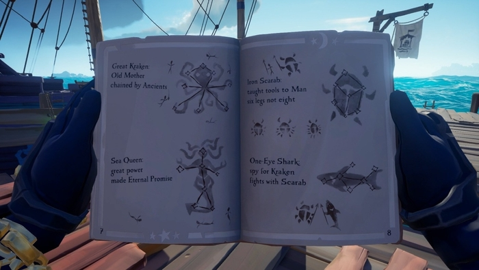
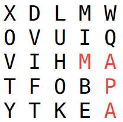

Edward Teach (também conhecido como Blackbeard) é uma lenda pirata em Sea of Thieves (popular jogo online de piratas) e está fazendo lorotas com sua aliança. Lorotas são grandes missões em que o jogador recebe um livro e deve desvendar suas charadas, como na imagem a seguir.

Blackbeard está em uma lorota que exige que o jogador encontre palavras no livro, sendo estas pistas para encontrar um tesouro. Como ele é o capitão do navio e está muito ocupado comandando a tripulação, deixou um dos membros da aliança como responsável por encontrar as palavras no livro. Ocorre que Blackbeard não pode confiar totalmente nas informações dadas pelos outros membros, afinal são piratas. Então ele precisa que você ajude-o a verificar, de forma rápida, se as informações realmente aparecem no livro.
Sua tarefa é escrever um programa em C chamado seaofwords.c que, dado o texto do livro e as pistas extraídas pelo membro da aliança, verifica se essas palavras realmente aparecem no texto. Como esse é um livro de charadas, as palavras não necessariamente aparecem na horizontal como em um texto comum, elas podem aparecer formadas por letras vizinhas na vertical e/ou horizontal (mas nunca na diagonal). Uma mesma palavra não pode utilizar a mesma letra do texto mais de uma vez, mas palavras diferentes podem. Como no exemplo a seguir, em que a palavra MAPA aparece no texto:

Entrada
A entrada é composta por várias linhas. A primeira linha contém três inteiros $n$, $m$ e $q$ que indicam, respectivamente, o número de linhas e colunas do texto e o número de palavras que serão buscadas. Em seguida são dadas $n$ linhas com $m$ caracteres cada, representando o texto, e $q$ linhas com as palavras que devem ser buscadas. O texto e as palavras dados na entrada não possuem o caractere de espaço.
Restrições:
- 5 ≤ $n$ ≤ 100
- 5 ≤ $m$ ≤ 100
- 1 ≤ $q$ ≤ 10
- As palavras possuem no máximo 20 caracteres
- Todos os caracteres das palavras e do texto são maiúsculos
Exemplo de entrada
5 5 1
XDLMW
OVUIQ
VIHMA
TFOBP
YTKEA
MAPASaída
A saída do seu programa deverá apresentar $q$ linhas, onde a i-ésima linha
contém sim caso a i-ésima palavra apareça no texto e nao caso contrário.
Exemplo de saída
sim
Correção
Esta tarefa será corrigida automaticamente e por um monitor. O teste automático será realizado sempre que você realizar um push. Para indicar que a sua tarefa está pronta para a correção pelo monitor, remova o arquivo nao_corrigir.txt do seu repositório antes de dar commit.
É obrigatório o uso de recursão nesta tarefa.
Dica
Use espaço antes de %c para ler o próximo caractere, ignorando espaços vazios e quebras de linha.
char c;
scanf(" %c", &c);